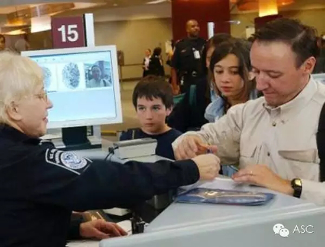

互惠动态
|
|
海外旅行必备口语硬通货
提示：点击上方"ASC"↑免费订阅本刊
十一黄金周刚刚过去，想必各位爸爸妈妈还是觉得意犹未尽，期待下次带上宝贝们再来一次“说走就走”的旅行吧。为了让宝贝们见识更加广阔的世界，体验不一样的民族风情，不少父母会选择海外旅行，那么早已毕业多年的爸爸妈妈们准备好了在宝贝面前树立好榜样，实现和外国友人零障碍沟通了吗？
那么，下面这些英语表达算是硬通货，各位老爸老妈们，快快学起来吧!

Will you book a ticket to Paris for me?
请您为我预订一张到巴黎的机票，好吗？
When do you intend to leave Beijing?
您想什么时候离开北京？
This Thursday, October 8th.
这周四，十月8号。
There are several flights to Paris available on October 8th.
十月8号有好几个飞往巴黎的航班。
Which flight do you prefer?
您想要哪一个航班？
Afternoon flights preferably.
最好是下午的航班。
Yes, madam. There are two flights available that day:oneat 4pm, the other one at 9pm.
好的，女士。那天下午有两个航班，一个是下午4点，另一个是下午9点。
Fine, I’d like the 4pm one.
好的，我想要下午4点的航班。
☆如果想要东西时，句型很简单，就是：
Excuse me. Could I have a cup of orange juice, please?
您好，请给我一杯橙汁。
☆如果冷想多要一个毯子可以说：
Could I get another blanket, please? I’m a little cold.
可以再给我条毯子吗？我有点冷。
☆如果要在飞机上填入境表格，没有笔可以说：
Could you lend me a pen to fill out this immigration form?
您能借我只笔吗？我要填写一下入境表格。
☆如果想找个人换座，可以说：
Would it be possible to change seats with someone?
我可不可以和别人换一下座位？
☆如果有人坐在你的椅子上了，可以说：
I’m sorry, I think you are in my seat.
对不起，你好像坐的是我的座位。

Where did you fly from?/Where have you come from?
您是从哪里坐飞机来的？/ 您从哪里来？
From China.
中国。
May I have your passport and sth please?
能看一下您的护照和~~~吗？
What is the purpose of your visit?
您此行的目的是什么？
Travel.
旅行。
How long are you planning to stay?
您打算在这里停留多久？
Two weeks.
两周。
Where will you be staying?
您将在何处住宿？
I’ll be staying at a hotel.
住酒店。
ASC寄语：千里之行始于足下。对于一门语言的掌握并不是简单地背几个句型，或是一些单词就可以解决的。小朋友们更加需要的是一种语言环境，一种使用语言的习惯。把外国的洋哥哥、洋姐姐请到家里来，一起教学相长，寓教于乐，让孩子在轻松愉快的氛围中，不知不觉地爱上外语学习，并且能够做到熟练使用。
ASC国际互惠生项目公众号ASCCENTER
互惠生最早起源于英、法、德国等自发的青年活动，是指给来自全世界的青年提供一个寄住在他国家庭里体验文化学习语言的机会，如今我们把国外互惠生请来家庭里，照顾自家的孩子，从小培养外文的语言环境，为孩子出国，全家移民打下优良基础，关注个【公众微信号】ASCCENTER了解更多国外有趣资讯。
ASC国际互惠生客服号ASC-CENTER
24小时客服个人微信号，对接家庭与互惠生之间的问题，对互惠生项目有陌生不熟悉或者想了解更多信息的可以关注【个人微信号】ASC-CENTER与客服详细交流。